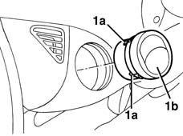

5010C38 l/h or r/h side air outlet (one) on fascia - r+r
- Path
- Procedures > 50 AUXILIARY UNITS > 5010 HEATING/VENTILATION - MISCELLANEOUS > 5010C air outlet and diffusers > 5010C38 l/h or r/h side air outlet (one) on fascia - r+r
- Kind
- repair procedure (removal / refitting; the operation number is the code)
- Applies to
- all engines; all production periods
- Interactive page
- https://sloeber94.github.io/elrnDB-fMltpl/en/#/2891768
Applies to: all engines; all production periods
 Removing
Removing
 Refitting
Refitting1. Release the retainers (1a) and remove the vent (1b).

Applies to: all engines; all production periods
Refitting
RemovingCheck that the vent is not damaged.
Fit the vent in its housing and engage the retainers.
Test the operation of the vent and the various adjustment possibilities.